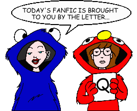
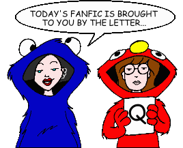

Fan Fiction
"Q" by Author

Fan Fiction
"Q" by Author

|
Authors: If you no longer wish for any of your stories to be posted, please send e-mail to fanfic@lawndale.net and I will remove them at once. |
| QuangyJane (QuangyJane@hotmail.com) |
| Driving Ms. Daria Category: Miscellaneous Daria is afraid to drive. She finally gets over it with the help of Trent. |
| Queen Jossie (iamthequeen@chickmail.com) |
| Attack of the Pink Bunnies (*) Category: Miscellaneous Quinn eats some Peep bunnies and hallucinates. More interesting than it sounds. |
| Bake Off (*) Category: Miscellaneous A short story inspired by the lack of baking skills of the author's sister. |
| Falls Apart (*) Category: Miscellaneous A bloody nose, Trent fighting, and Quinn trying to date Tom? The sequel to "Just Say It." |
| A Fate Worse Than Li Category: School Situations Lawndale High has finally gotten rid of the tyrranical Ms. Li, and her replacement appears to be a marked improvement... at first. However, Daria and Jane quickly discover that the replacement is anything but, and they scheme to undo the damage. |
| It's My Party and I'll Hide If I Want To Category: Miscellaneous Jane throws Daria a party, and Daria and Trent write a song for Jane. Watch the drama unfold... |
| Just Tell Him (*) Category: Miscellaneous Daria recognizes her feelings about Tom. Definitely not what it sounds like. |
| Live on TV Category: Miscellaneous Daria, Jane, and Mystik Spiral end up on an episode of "Sick, Sad World." |
| The Other Side of the Mirror (*) Category: Miscellaneous The past events through the eyes of Tom, plus a pitiful shipper ending. |
| Power Behind the Pantsuit Category: School Situations Ms. Li finally goes too far when planning a school event, and ends up putting her job and all of Lawndale High at stake. |
| The Real Story (*) Category: Miscellaneous A look into the mysterious life of Jane's boyfriend, Tom. |
| A Short Fic (*) Category: Miscellaneous A short story about the events of "I Loathe a Parade." A lead-in to the author's next few stories. |
| When You See Me (*) Category: Miscellaneous A continuation of "The Real Story," where Tom sees someone he misses. |
| Y 2 Day? - Part 1 Category: Miscellaneous Trying to get away from the leftover fruitcake and her family, Daria has an adventure to the hospital with the Lanes while contemplating her New Year's plans. Of course, nothing is as planned, and when Daria returns before the New Year, she is faced with more than she expected. (Part 1 of 2) |
| Y 2 Day? - Part 2 Category: Miscellaneous After her incident with a drunken Quinn, Daria is forced to adapt to a new "look." The Lawndalians cope with the oncoming new millenium, while the gang may have to cope with... other fanfic writers?! (Part 2 of 2) |